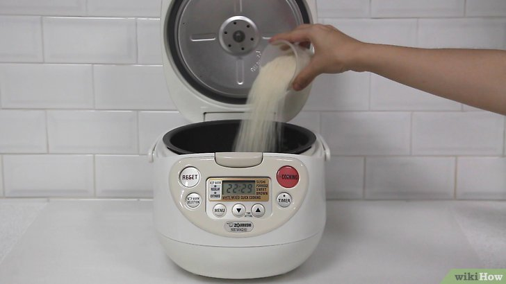
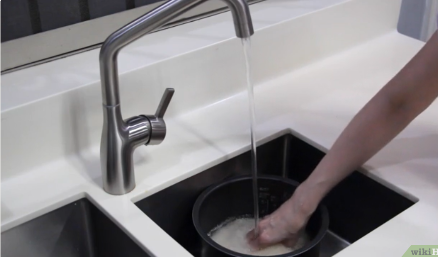
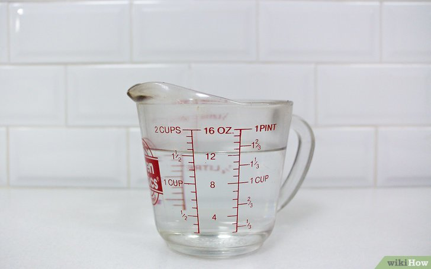
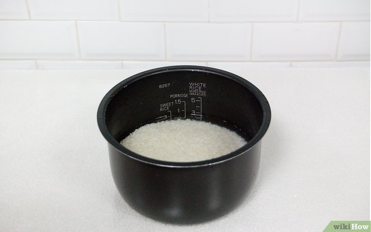
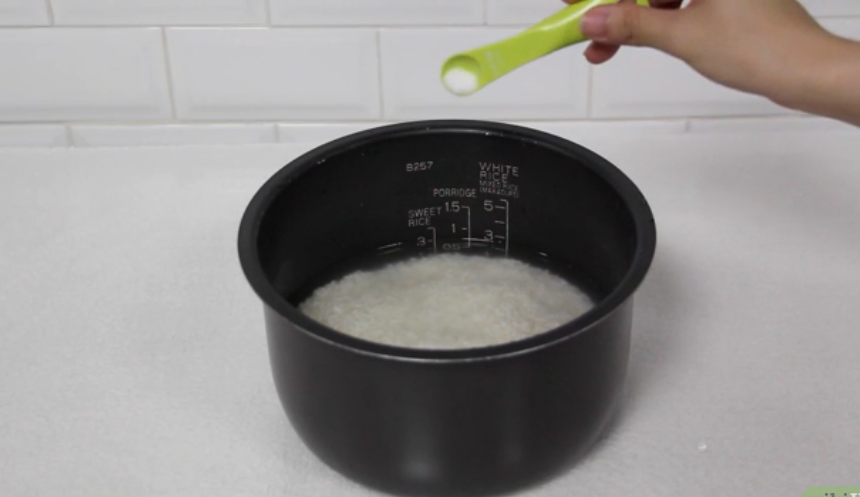
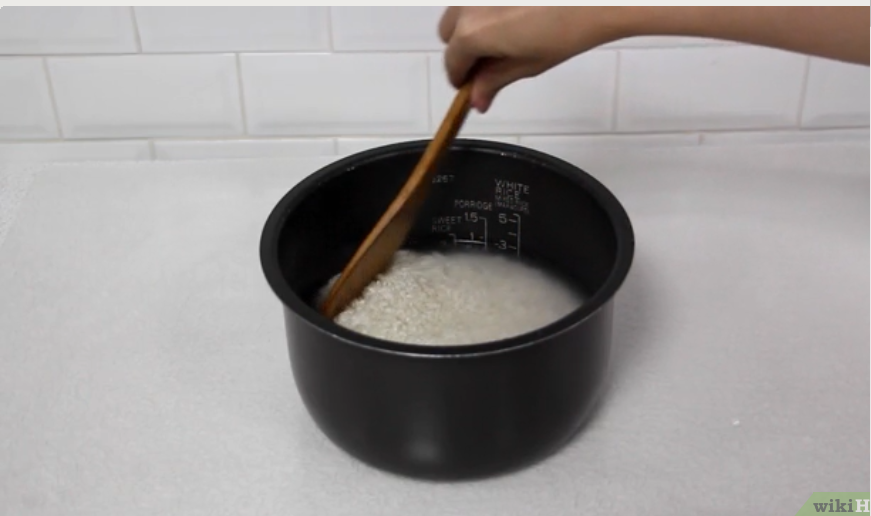
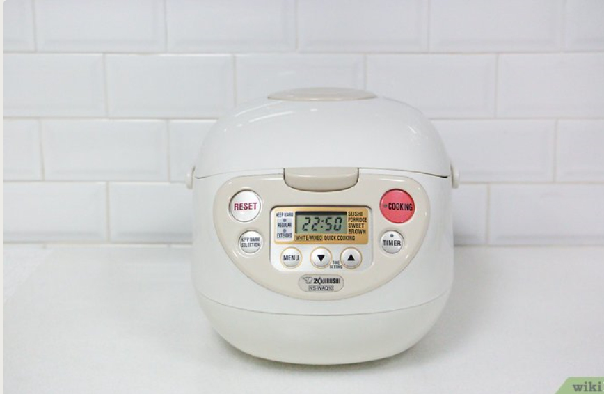
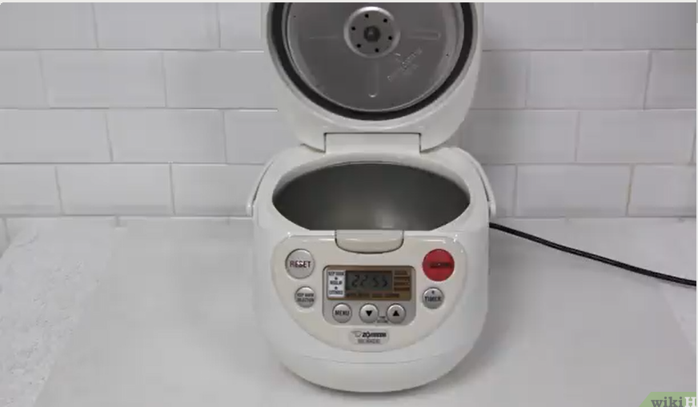
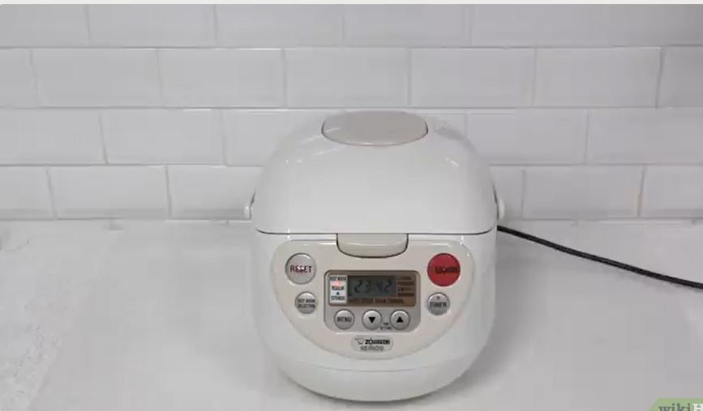
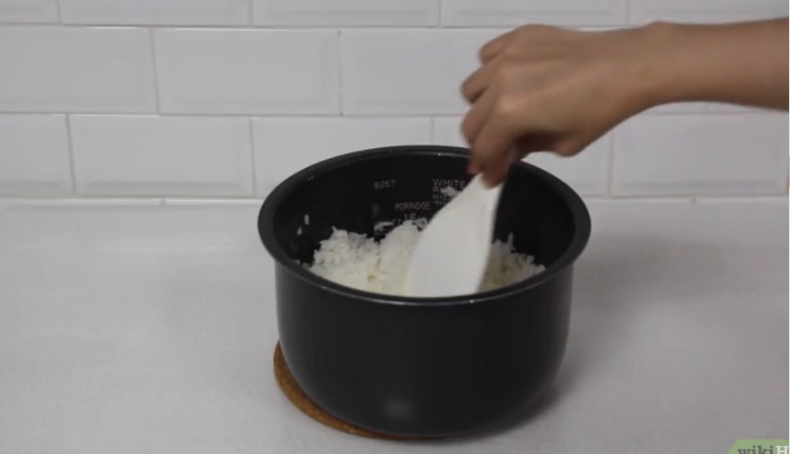

Resep White Rice
Bahan-bahan dan Alat :
- 300 gr Beras
- Air Secukupnya
- Rice cooker
- Cangkir Takar
- Perasa
Langkah - langkah
-
Ukur beras dengan cangkir takar,
dan masukkan ke dalam panci penanak nasi Anda.

-
Cuci beras jika perlu.

-
Ukur air.

-
Rendam beras selama tiga puluh menit kalau suka.

-
Tambahkan perasa (sesuai selera).

-
Masukkan butiran beras yang menempel di dinding panci
masuk ke dalam air sehingga semua beras terendam sepenuhnya,
jangan sampai ada yang tercecer.

-
Periksa penanak nasi
Anda untuk menyalakan pilihan atau pengaturan khusus.

-
Masak nasi dalam penanak nasi.

-
Biarkan nasi selama 10-15 menit
sebelum membuka tutup penanak nasi (pilihan).

-
Aduk nasi agar tidak padat dan menggumpal, dan sajikan.
